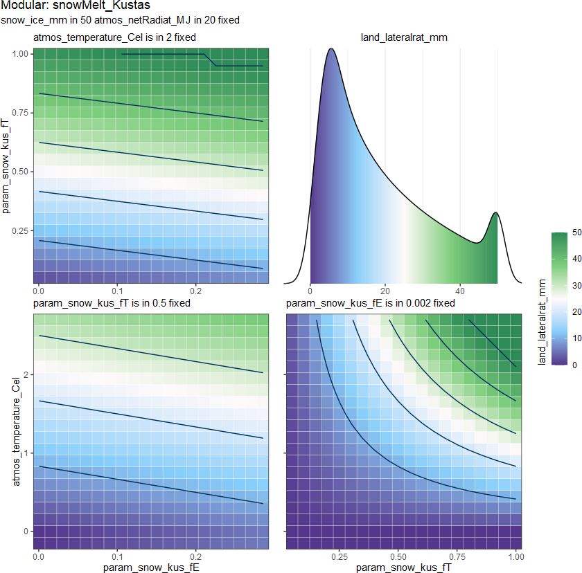
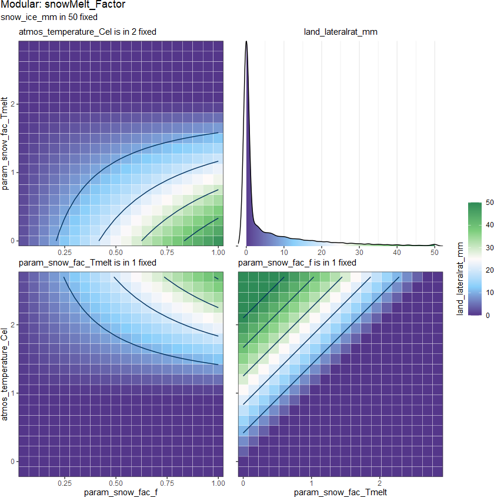

Under the concept of the conceptual HM, the melt of snowpack is always calculated by the energy availability (the state-variable temperature \(T\) or flux-variable (nett-) radiation \(Rn\)) and the solid water (snow or ice) availability \(W_{snow}\) of the snowpack.
Some more complex processes, such as refrozen and residual water, will be ignored. To simplify the model, the layer snowLy will store only the solid water and will melt it as much as possible when the energy is sufficient.
So we can give the function from:
\[F_{melt} = f_{snowMelt}(D_{atms}, D_{snow})\]
to: \[F_{melt} = f_{snowMelt}(T, ...)\] \[F_{melt} \leq W_{snow} \]
where
\(F_{melt}\) is
snow_melt_mm\(W_{snow}\) is
snow_ice_mm\(T\) is average temperature
Then the different snowMelt methods will estimate the maximal snow melt \(M_{max}\).
The output density distribution from 2 methods:

Usage
snowMelt_Kustas(
snow_ice_mm,
atmos_temperature_Cel,
atmos_netRadiat_MJ,
time_step_h,
param_snow_kus_fE,
param_snow_kus_fT
)
snowMelt_Factor(
snow_ice_mm,
atmos_temperature_Cel,
time_step_h,
param_snow_fac_f,
param_snow_fac_Tmelt
)Arguments
- snow_ice_mm
(mm/m2) water equivalent of ice in snowpack
- atmos_temperature_Cel
(Cel) the average air temperature in the time phase
- atmos_netRadiat_MJ
(MJ/m2/TS) the balance between the energy absorbed, reflected and emitted by the earths surface or the difference between the incoming net shortwave (Rns) and the net outgoing longwave (Rnl) radiation
- time_step_h
<1, 24> (h) time step in hour
- param_snow_kus_fE
<0.0005, 0.003> (mm/m2/MJ) snow melt temperature parameter for
snowMelt_Factor()- param_snow_kus_fT
<0.05, 1> (mm/m2/h/Cel) potential melt volum per Cel per hour parameter for
snowMelt_Factor()- param_snow_fac_f
<0.05, 2> (mm/m2/h/Cel) potential melt volum per Cel per hour parameter for
snowMelt_Factor()- param_snow_fac_Tmelt
<0, 3> (Cel) snow melt temperature parameter for
snowMelt_Factor()
_Kustas (Kustas et al. 1994) :

\[F_{melt} = m_T T + m_E R_n\] but due to the temperature is one energy-state-variable, in order to adjust to subday scale we need to add a new time interval \(t_h\) from 1 to 24 hour \[F_{melt} = m_T T t_h + m_E R_n\] where
\(m_T\) is
param_snow_kus_fT\(m_E\) is
param_snow_kus_fE\(R_n\) is daily net radiation
_Factor (Dingman 2014) :

\[F_{melt} = m_T (T-T_b), \quad T > T_b\] where
\(m_T\) is
param_snow_fac_f\(T_b\) is
param_snow_fac_Tmelt
References
Dingman SL (2014).
Physical Hydrology, Third Edition, Third edition.
Waveland Press, Inc., Long Grove, Illinois.
ISBN 978-1-4786-1118-9.
Kustas WP, Rango A, Uijlenhoet R (1994).
“A Simple Energy Budget Algorithm for the Snowmelt Runoff Model.”
Water Resources Research, 30(5), 1515--1527.
ISSN 00431397, doi: 10.1029/94WR00152
.